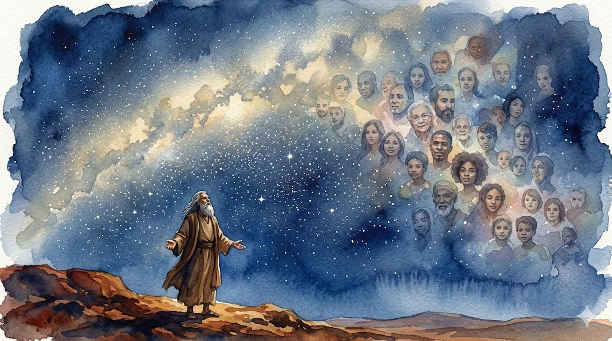
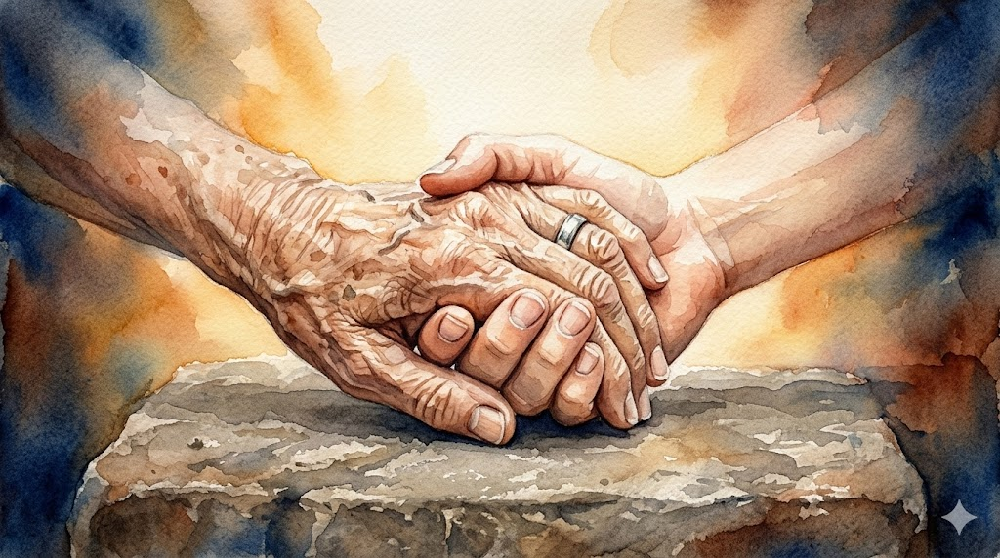

Historical Context
Abraham's World: Ur of the Chaldees
- One of the most sophisticated cities on earth — c. 2000 BCE
- His father Terah had abandoned true worship — idols, ritual sacrifice at pagan altars
- Abraham was handed over to be sacrificed to false gods (Abraham 1:5–12)
- His covenant begins not in comfort — but in near-death and rupture from family
Opening question — hold 30 seconds of silence before any scripture:
"Have you ever walked away from something your family expected of you — in order to walk toward God?"

Covenant Membership Begins With Desire, Not Genealogy
Let's Read: Abraham 1:2
"…desiring also to be one who possessed great knowledge, and to be a greater follower of righteousness…"
💭 Personal first: When did you first feel that your testimony was yours — not inherited from your parents or your culture?
📖 Doctrinal: According to Abraham 2:10–11 and Galatians 3:26–29, how do we become Abraham's seed? What does that mean for someone with no Abrahamic bloodline?

You Are Accounted His Seed
Let's Read: Abraham 2:9–11
"…as many as receive this Gospel shall be called after thy name, and shall be accounted thy seed, and shall rise up and bless thee, as their father…"
- Abram → Abraham — God renames him into his covenant destiny (Genesis 17:5)
- The covenant is adoptive, not merely biological — entered through baptism and temple ordinance
- See also: Galatians 3:26–29 · D&C 132:30–32

The Covenant: Blessings Received and Obligations Carried
- Seed — vast posterity, physical and spiritual (Genesis 13:16; 17:4–8)
- Land — inheritance now and eternally (D&C 131:1–4)
- Gospel — all nations blessed through his seed (Abraham 2:11)
Genesis 12:2 — the mandate often read past:
"…and thou shalt be a blessing" — not just receive one.
💡 Application: In your neighborhood or family — not in a calling — what does it look like to be a blessing as a covenant bearer?
💭 Personal: Have you ever felt the weight of being Abraham's seed — that you carry something forward for others, not just yourself?
![Watercolor painting. Warm ochre, sienna, and deep cobalt blue palette. Loose luminous washes. An elderly man and a young boy walk together up a steep rocky mountain path at early dawn. The father walks with a long knife at his side; the son carries a heavy bundle of wood strapped to his back. They walk toward pale light on the horizon but their posture carries enormous weight. Long shadows stretch behind them. The mountain top dissolves into morning mist. Profound sorrow and faithfulness. No text. 1920x1080 landscape.](images/06-moriah-approach.jpg)
Transition — Teacher Narrative
Twenty-Five Years of Waiting — Then the Unthinkable
Deliver this bridge without class discussion. Let it land.
Teacher reads slowly — Genesis 22:1–2:
"Take now thy son, thine only son Isaac, whom thou lovest, and get thee into the land of Moriah; and offer him there for a burnt offering…"
The covenant God gave Abraham a face. And then asked for that face back.
![Watercolor painting. Warm ochre, sienna, and deep cobalt blue palette. Loose luminous washes. An elderly man with a white beard kneels beside a rough stone altar on a barren mountaintop, arms raised toward heaven, face lifted in anguish and trust. A young man lies on the altar with eyes closed in willing surrender. A shaft of brilliant gold light descends from above. In the far background a ram is just visible caught in a thornbush. The mood is simultaneously anguished and transcendent. No text. 1920x1080 landscape.](images/07-akedah-altar.png)
The Covenant Is Tested, Not Voided, by the Impossible
Let's Read: Genesis 22:5–8
"I and the lad will go yonder and worship, and come again to you." — v.5
"God will provide himself a lamb for a burnt offering…" — v.8
- Abraham says we will return — resurrection faith (Hebrews 11:17–19)
- Isaac carries the wood for his own sacrifice (v. 6) — a detail the narrator does not explain
- "God will provide himself a lamb" — faithful readers across centuries have heard this as prophecy (Jacob 4:5)

Ponder the Akedah
💭 Personal: Have you ever been asked to offer something back to God that you believed He had given you — a calling, a relationship, a plan that felt like your Isaac? What did that teach you?
📖 Doctrinal: Isaac never resists. He carries the wood and asks about the lamb. What does his willing obedience add to the typology?
🔎 Faith: Hebrews 11:17–19 tells us what Abraham believed as he climbed that mountain. What was it — and how does that change the emotional weight of the story?
![Watercolor painting. Warm ochre, sienna, and deep cobalt blue palette. Loose luminous washes. A split composition. On the left half: an ancient stone altar on a windswept mountaintop at sunrise, a ram caught in a thornbush in the foreground, warm golden light. On the right half: a wooden cross silhouetted on a hill at dusk against a deep crimson and violet sky. The two scenes mirror each other across the center divided by a thin vertical line of radiant white light. Typological sacred and reverent. No text. 1920x1080 landscape.](images/09-similitude.jpg)
"A Similitude of God and His Only Begotten Son"
Jacob 4:5
| The Akedah — Genesis 22 | The Atonement |
|---|---|
| Isaac — "only begotten" of Abraham & Sarah (Heb. 11:17) | Jesus — Only Begotten of the Father (John 3:16) |
| Isaac carries the wood for his own sacrifice (v. 6) | Christ carries His own cross (John 19:17) |
| A ram substituted — Isaac is spared (v. 13) | No substitution. The Father does not stop what Abraham was stopped from finishing. |
| Jehovah-Jireh — "YHWH will be seen" (v. 14) | On a hill outside Jerusalem — God is finally, fully seen |
📖 In the Akedah, a ram appears. In the Atonement — there is no ram. What does that difference tell us?

Abraham Was Stopped. The Father Was Not.
Let's Read: D&C 132:30–32
"Abraham received all things, whatsoever he received, by revelation and commandment, by my word, saith the Lord, and hath entered into his exaltation…"
💭 How does standing in the Akedah from Abraham's perspective — as a parent, as a covenant keeper — change how you understand what the Father gave?
✦ We entered the same covenant Abraham did. If covenant faithfulness can be tested the way his was — what does that mean for our willingness to offer?
Abraham 3:25 — "We will prove them herewith, to see if they will do all things whatsoever the Lord their God shall command them."